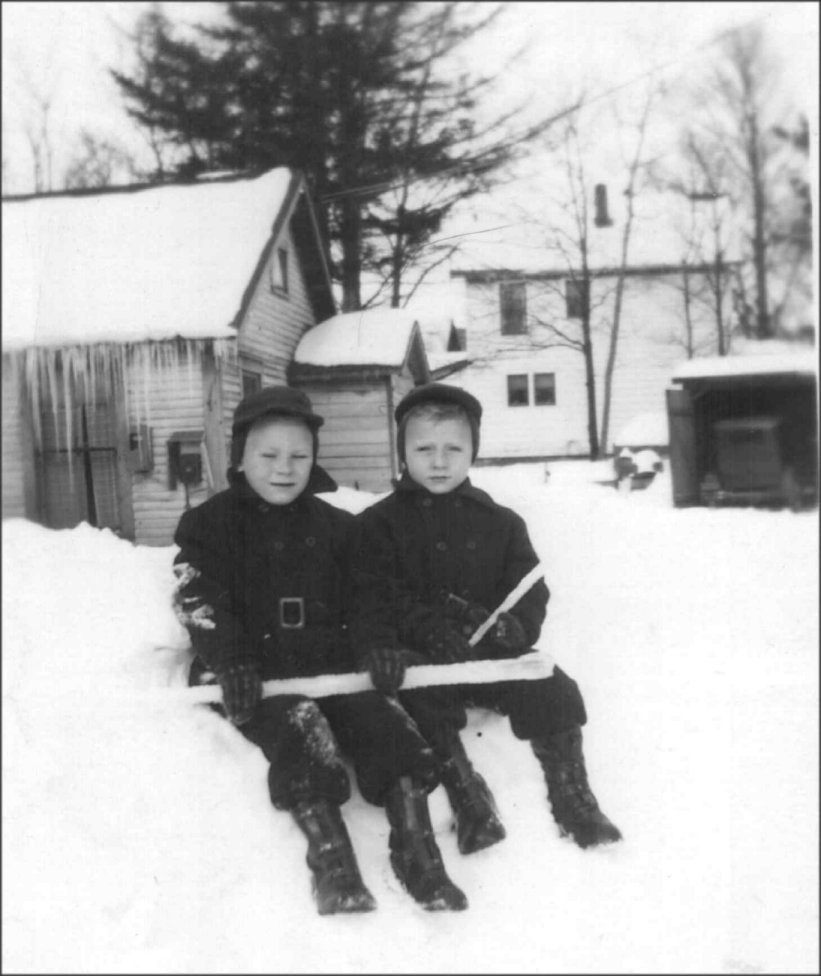

I have never told anyone about my case of hero worship. It started when I was about 10 or 11 and my parents bought the bowling alley. There were two very different brothers, who were pin boys. They were older than me, teenagers, and they were cool. The youngest could talk up a storm and had stories about everything. He would talk me into a game of hand slap where one would put your hands on top to the other persons and the bottom player would have to flip over his hands and slap yours. My hero had the fastest hands ever but I didn’t care if he was beating my hands red, I was playing with my hero.
My hero was also a great baseball player. He was the first person I ever knew who could hit a baseball into the street at Schroeter's field and I wanted to hit one like him. He was also a great pitcher so I became one too. I also became the batboy for the high school and adult teams so that I could be on the same field as him. When my son became a pitcher in college, I always wished my hero could see him play. For some reason his approval was important to me.
My hero also had the best stories about the antics of Little Joe and his practical jokes. I am not sure if they were made up, half truths or the whole truth but they were great. When I left Saranac Lake and would come back to visit, I always made it to Little Joe’s so that I could find out about my hero and his life.
Now I am sorry that I never told you how important you were to my younger years. I hope maybe you knew that you were important to that little pain of a kid who followed you around.
Rest in peace and maybe someday we will again be playing on the same ball field.
Jim McClay
when you rest upon it,
and may it rest easy over you when,
at the last, you lay out under it,
And may it rest so lightly over you
that your soul may be out
from under it quickly,
and up, and off,
And be on its way to God.
Never ever did I think I would be saying goodbye to you. I hope that you know that I love you, and I thank you for all that you have done for me and Corri when we needed you. You are my hero and always will be forever. See you in Heaven!
Love You,
Kathy
He lived by the Golden Rule.
He was about respect and care for others.
He had time for everyone.
Bob’s sense of humor…Well…gimme me a break! I quote: "The Placid boys were runnin’ from us so fast the paint was slidin’ off the car!" And, about the coffee shops in Kingston, I quote: "Bump, if the whole kitchen explodes from boiling fat & it jumps to our greasy coffee, even Red Adair won’t put it out!"
Bob Griffin was everybody’s favorite.
He was positive about life. If there was a problem he’d get to the bottom of it.
Bob Griffin was my friend.
People listened to him.
He was a man for all seasons and everyone knew it.
He was just so easy to be with.
His family was himself…."Oh, Diane…" he’s always say.
If fortune serves you one person in life like Uncle Bob, you are blessed.
Bob Griffin was proud of his service to our country and felt good about it.
Bob Griffin had true class, and for the little bit left in the world today, we just lost a chunk of it.
Bob Griffin was the brother I never had. He was a person to depend on, like a rock.
Bob Griffin was Saranac Lake.
Bob Griffin was my friend.
I was positive I’d always see him again. He would always say, "See ya later." …and I knew I would even if it was in Tangiers or Tupper Lake.
Bob Griffin’s passing leaves us all diminished – like Bob Dylan said, "Never send to know for whom the bell tolls, it tolls for thee."
Bob had & deserved many good friends, more than most folks. He always thought it cool that his best man Rick LaPan & I became close – we three only stood together one time.
All this past tense is no fun. This message doesn’t scratch the surface about who Bobby really was.
Bob Griffin knew how much I loved him.
And as long as I’m around Bob will be alive. If I’m lucky enough, I’ll see him on God’s Golden Shore and he’ll most likely be in charge of makin’ sure everyone’s happy.
He was a great athlete, a dedicated teacher, a devoted family man. But so are a lot of people.
He was a decorated soldier and a storyteller with a huge stock of material. But a lot of people are that too.
So what special qualities made him the person he was?
I mulled over this, ran it through my mind, turned it this way and that, till it hit me: Bob understood one of life's Great Essential Truths that too many of us either forget or never knew in the first place - things don't matter, only beings do.
I knew Bob all my life, but because he was five grades ahead of me, he was one of The Big Kids, that group of exalted beings as unapproachable to me as the Maharaja of Jaipur.
In the 60s, our paths crossed again when we both had classes at Paul Smith's. But while our acquaintanceship was pleasant, it was also superficial, limited to brief, occasional chats.
Our relationship got cemented about 10 years ago in that Hub of the Universe - the Blue Moon. During the summer, I'm there every morning; Bob, a summer resident, came in some mornings, so it was inevitable two super-shmoozers like us would end up sharing the same table.
Our get-togethers always began and ended with a handshake and a hug, but what went on between them was a free-flowing exchange of old time Saranac Lake tales, personal and political rants, educational theory and practice, anecdotes and adventures, very little sports (at my insistence), jokes, put-ons and goofs, with classic gossip thrown in for good measure.
Typically, our sessions lasted a couple of hours, and then, abuzz with tales and caffeine aplenty, we'd say our goodbyes. Sometimes, however, we idled away three or even four hours. To a lot of people, four hours talking and drinking coffee is a complete waste of time. It wasn't a waste of time to me; in fact, it may have been one of the smartest things I?ever did.
Their importance had nothing to do with money or status or power or any of the other conventional trappings of success. Instead, he was genuinely friendly to everyone and if they responded in kind, the deal was sealed.
Friendship is never a matter of words alone, and with Bob and me it went into, of all things, hats.
As long as I can remember, I've been enamored with hats. Maybe "enamored" is too weak a word and "obsessed" is more like it. I'll leave that to the lexicographers and shrinks to figure out. But the truth is I've never met a hat I didn't like and I've got so many I sometimes wear four different ones in a day just because, to paraphrase George Leigh Mallory, "they're there."
Bob himself couldn't have cared less about hats, or about clothes in general. To him they were for comfort and utility and nothing more. But if I had a hat fetish, the least he could do as my friend was support it which he did with gleeful abandon.
A few weeks after he and his wife Diane had left on their annual winter sojourn, a small package appeared on my doorstep. Handwritten on the return address was, "The Mad Hatter, Key West." Inside was a light blue ball cap with "Conch Republic" embroidered on it. It was an inconspicuous beginning to what became a very conspicuous collection.
The class radio disc jockey line was, "The hits just keep on comin'!" And there but for one vowel was the story of Bob and me: As he and Diane trekked around the country, I'd receive a hat from here, another hat from there, and another hat from the other place.
They ranged from the silly to the sublime, the silliest being my St. Patty's Day shamrock special; the most sublime being my elegant Uncle Sam top hat from Venice Beach.
But for sheer fun and funk, my palm frond hat is a classic: Right-side-up, it's a parrot; upside-down, it's a fish, and either way it can hold a bottle of your favorite beverage in its center.
Then again, my Route 66 cap is almost too classy for me (the key word there being "almost").
Which one is my favorite? Silly question - they're all my favorite.
Of course the hats are only hats. What they represent, however, is Bob's loyalty, which was undying - literally. And last week when our friendship ended, it happened the only way it could have - Bob's great heart gave out.
I've never forgotten something an old guy told me about friendship when I was a little kid.
"When you get to be my age," he said, "you'll be lucky if you can count all your friends on one hand."
I nodded out of politeness but didn't believe a word of it. And why would I? I was ten years old; I had dozens of friends. And when I got to be his age, I'd have hundreds.
The years blasted by and now I'm that old guy's age. And guess what? I don't have the hundreds of friends I thought I'd have, nor do I have the dozens of friends I thought I had back then.
In fact, I don't even know if I've got enough friends to count on one hand.
I only know, all too well, last week I lost one of my best.
Bob Seidenstein
Mike Lynch
the Keoghs diggers little league team
the florida trips
long conversations in my fathers bar
sl chiefs baseball and watching him pitch with wonder
so much more that i cannot remember...he was my mentor, he was my friend.
rest well bob, for if anyone deserves his rest, it is you.
brian lynch
